builderscon tokyo 2019
builderscon tokyo 2019
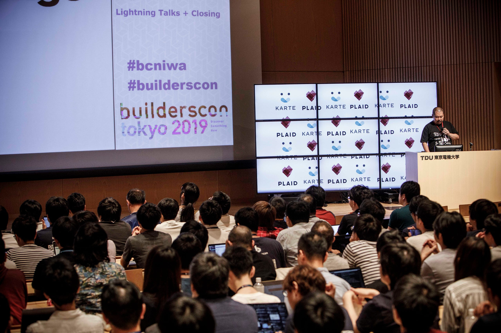
We have just finished with the main dates for builderscon tokyo 2019, which was held during Aug 29 to Aug 31 at Tokyo Denki University in Kita-Senju
builderscon tokyo 2019 | Aug 29-31, 2019 / Tokyo Senju Campus Building 1, Tokyo Denki University | Discover Something…builderscon.io
This year marks the fourth rendition of builderscon, and we feel that we have achieved recognition amongst the tech community that we are… slightly different from the other tech conferences, which usually focus on a single language, product, or tech stack.
We have seen a very diverse set of proposals and therefore attendees, from Mathematica to Radio Frequency Data Transmission Devices to Game Development to Neutrino Detection from outer space.
Guest Speakers
This year we invited 3 guest speakers, and provided real-time, 2 way interpretation for non-Japanese speakers, courtesy of Hamee Inc.
Howard Chu of LMDB fame to talk about application performance improvements.
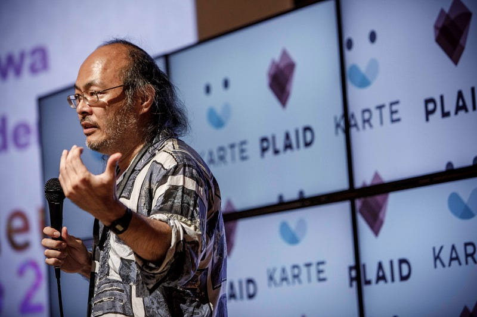
Graham Jans from Klei Entertainment to give us a glimpse into the development of Oxygen Not Included (which, incidentally, has completely sucked away my spare time from me)
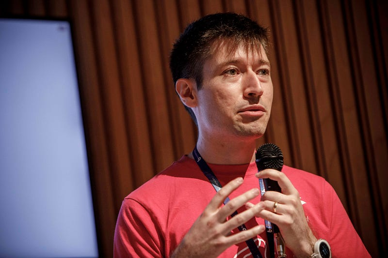
And Yoshinari Hayato one the persons behind Super-Kamiokande — a neutrino observatory in Japan.
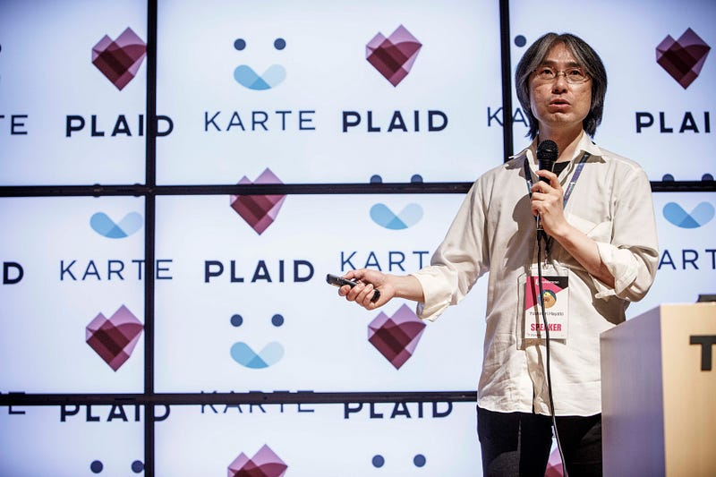
“This Room is Packed!”
Previously, there existed a fundamental unfairness between those speakers who got a larger room versus those who got a smaller room to present at. Obviously, the more audience you have, the more feedback you get. And conversely, if you are in a smaller room, you get less feedback from the audience. We felt that this made it harder for presenters in smaller rooms to get the recognition that they deserved.
This year we tried something new, and decided to award presenters with a “大入り” (which means ”Room Full”) towel if they had a room full of audience.
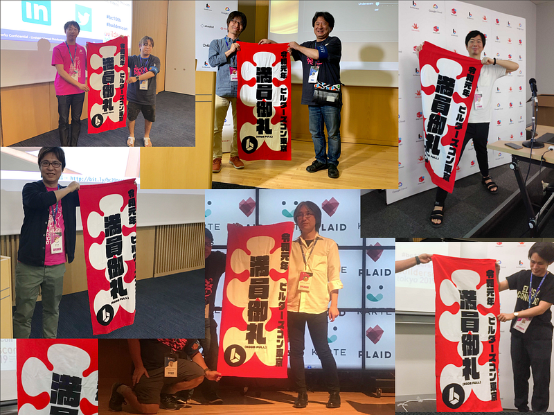
This is not nearly enough to show our appreciation, but we hope that the presenters at least felt a little bit more satisfied by their accomplishment.
The Show-and-Tell
Traditionally our audience consisted mainly of software folks, but we wanted to encourage more networking between the software/hardware crowd. So this year we dedicated part of our venue to host “show-and-tell” booths to encourage people to bring in their hardware projects, whatever they are.
We had way more participation than we anticipated, and it was great!
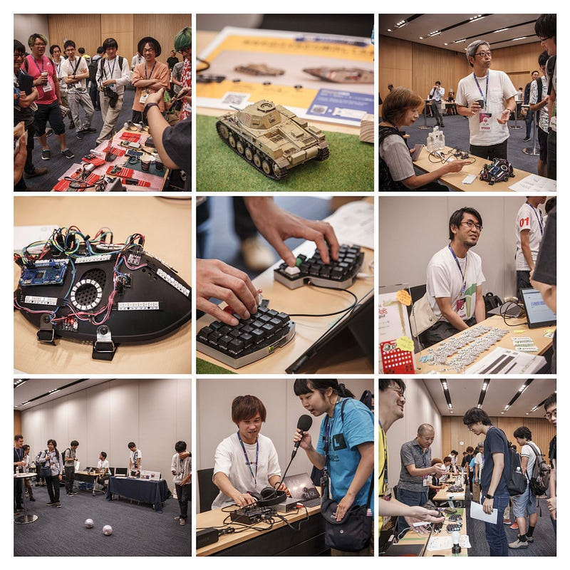
In the same room we had a senryu contest hosted by GMO Internet, where people were able to send in their senryu about builderscon.
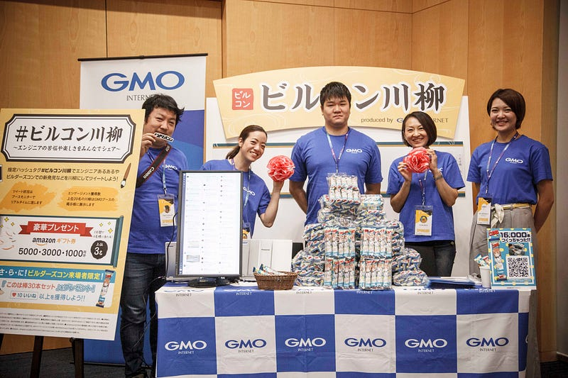
Awards
We recognize exceptional presentations with awards. This year we had two awards to give away, and one was provided by SQUEEZE Inc. This award went to @dqneo, who gave a presentation on writing a compiler in front of the audience.
Abstract コンパイラをつくってみたいと思ったことはありますか？ 「C言語わからないから無理」「低レイヤの専門家じゃないから無理」「コンピュータ・サイエンス学んでないから無理」などとあきらめてしまっていませんか？…builderscon.io
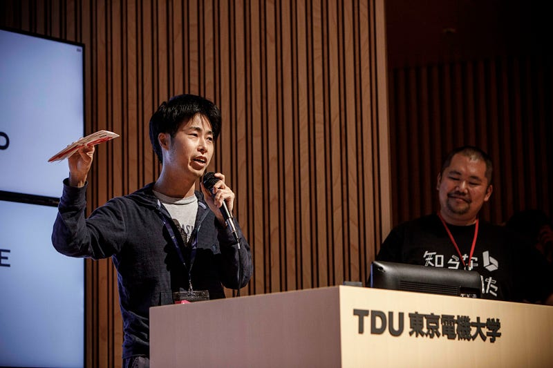
And the other award was for the presentation that we the organizers felt stirred up the audience the most. This went to Hayato Yoshinari, who we already introduced earlier, who gave our audience a glimpse into the world of neutrinos and large scale real-time data processing, along with a few details that these observatories must be prepared for, such as Betelgeuse’s explosions projected to occur 5000 years from now on.
Abstract 岐阜県神岡の地下に設置されたニュートリノ検出器「スーパーカミオカンデ」。 検出器本体は直径 40m 高さ 40m の水槽に 50,000 トンのタンクとそこに蓄えら れた超純水、そして約 12,000…builderscon.io
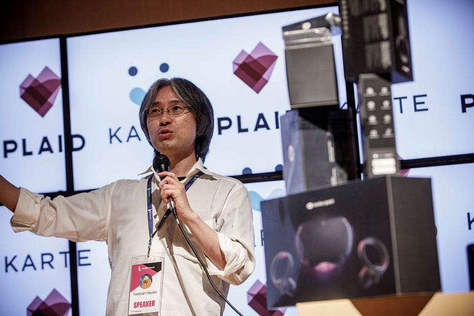
These two presentations gave the audience something extra to broaden the audiences’ view of the World.
Foods/Drinks
Breakfast/Coffee
Because many of our attendees come early in the morning and stay all the way through, we provided a few refreshments.
Breakfast was provided, courtesy of GMO Pepabo Inc.
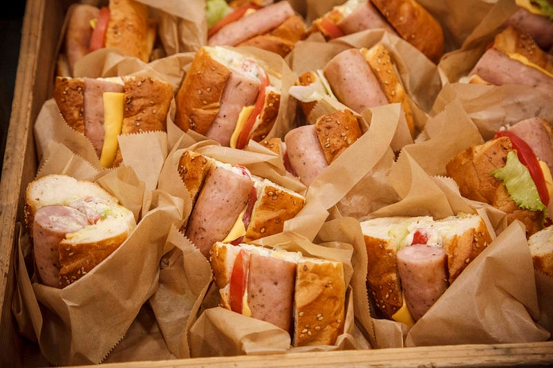
Coffee was provided courtesy of UniFa Inc.
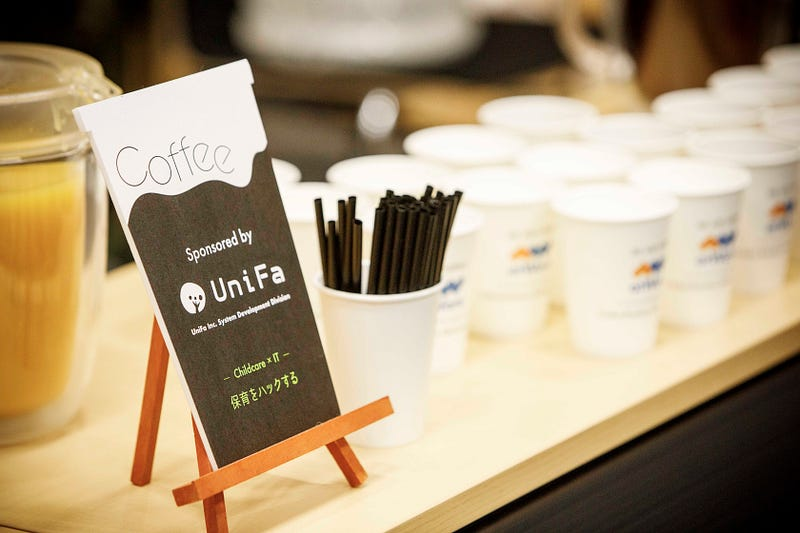
Bento and Lunch Sessions
We had bentos provided by Akatsuki Inc, and free lunch tickets to enjoy food at Italian Tomato Jr in the venue, provided by SAKURA internet Inc.
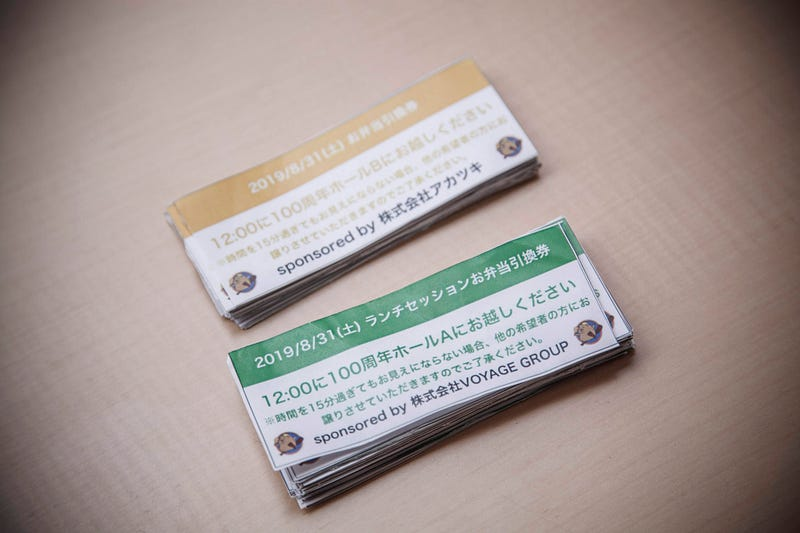
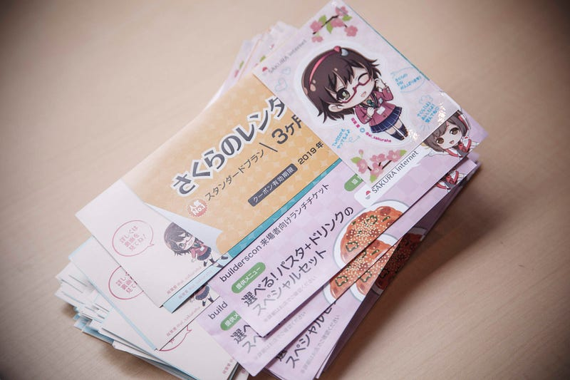
We had sessions hosted by freee inc, and VOYAGE Group. These sessions provide lunch that the attendees can enjoy while listening to our sponsors provide interesting presentations.
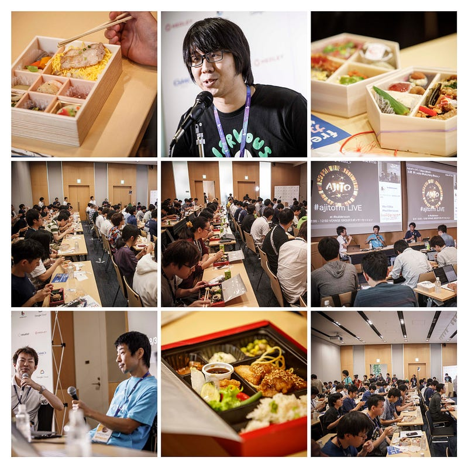
Conference Dinner
Conference Dinner was held on Aug 30, sponsored by dwango.
I personally never liked the drinks provided by any of the previous conferences that I attended. Beers weren’t really my thing, usually wine is lousy, and to top it off, soft drinks are usually an after thought.
So this year we brought in real bartenders from a real bar, courtesy of Hatena Inc, Nota Inc, Toreta Inc, and OKWave Inc.
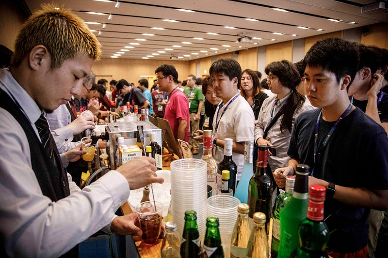
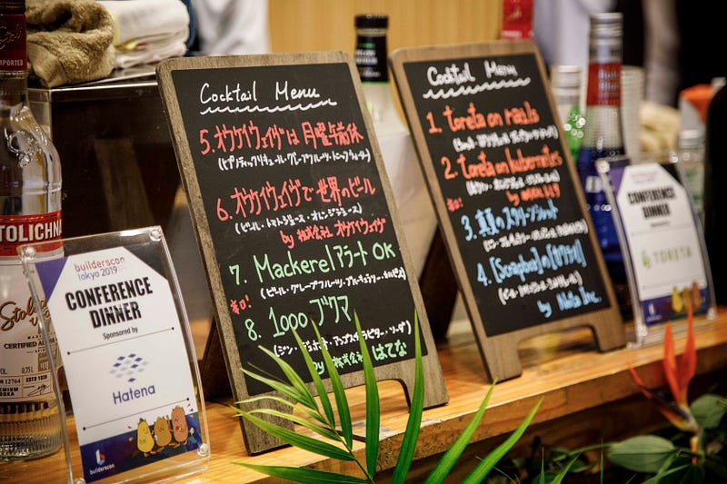
And the beers… and soft drinks…
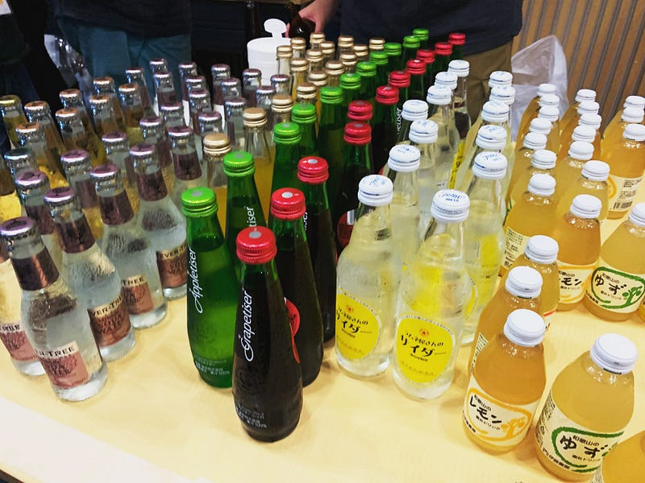
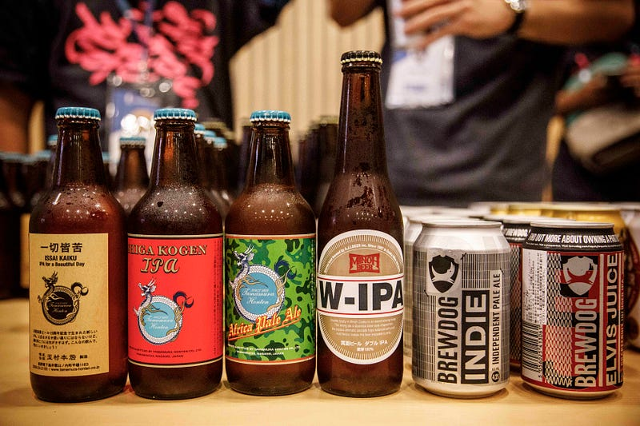
Food was provided by LULU Taps Bar. Amazing food!
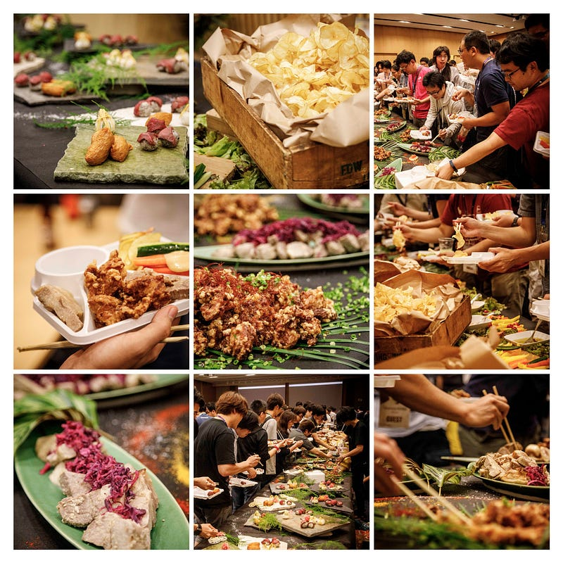
Wrap-up
Overall, I believe the event was smashing success — the turnout was very good, new staff showed us old dogs more possibilities, the presenters were anything but awesome, and we managed to keep the venue as clean as it was before we used it :)
We did have one incident caused by the team’s miscommunication with the a presenter regarding the content of their presentation, which unfortunately resulted in a presentation that was not in line with our expectation towards inclusiveness. This was by all means our lack of attention to details, and we will surely be incorporating checks in the future to prevent similar occurrences.
We certainly realized that we have more room for improvement, but nonetheless, from the feedback that we got, we think we were able to provide a conference worth everybody’s time, and true to our spirit of “Discover Something New.”
And finally, we’d like to thank all those who attended, all those who gave their presentation, and all those who worked so hard to make this conference happen.
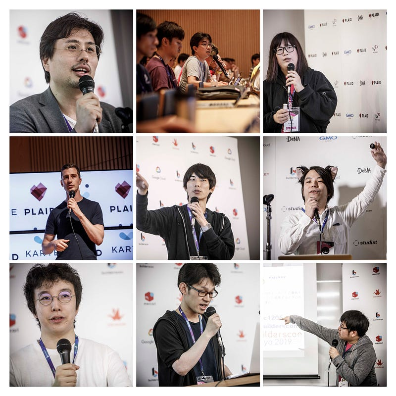
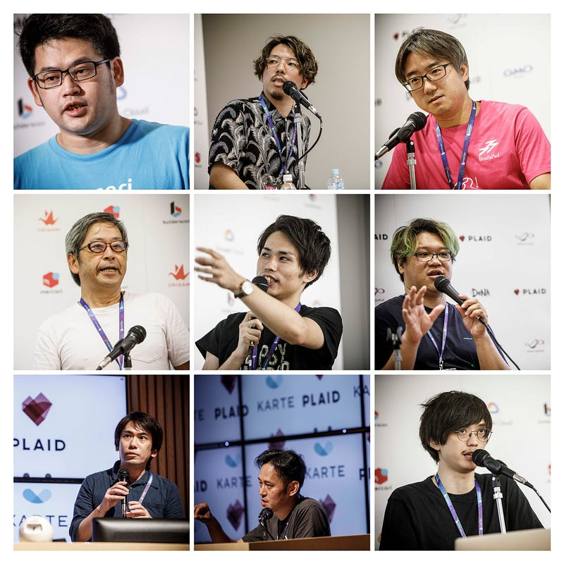
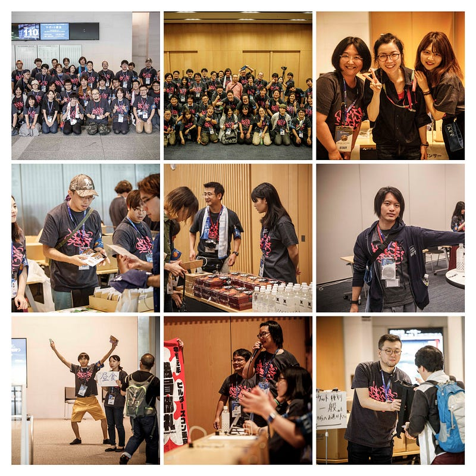